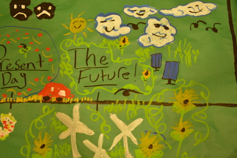
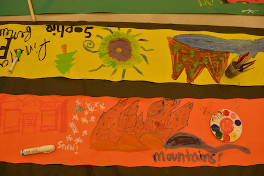
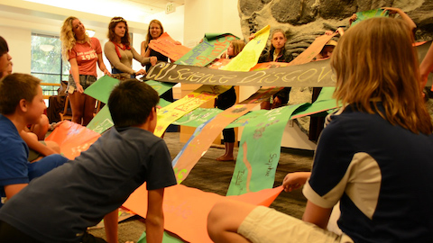
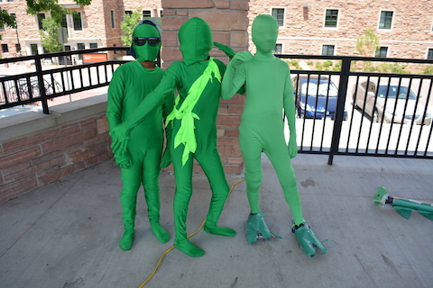
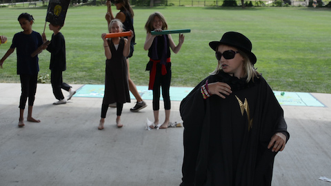
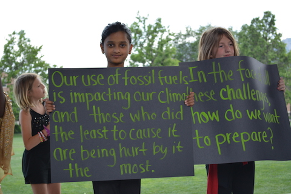
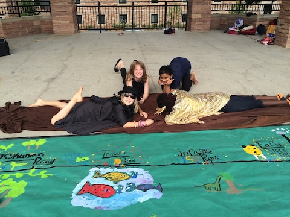

Where was it?
Located on campus at CU Boulder, in July 2016.
“What are those black clouds with sad faces on them?” I ask an eleven-year-old participant of the SHINE: A Musical Performance for Youth Authored Resilience CU Science Discovery camp.

We’re looking down at the massive, hand-painted timeline the kids at the camp have created to illustrate the history of the Earth. It starts 300 million years ago in the Pennsylvanian Period, where the kids have painted trees and vines to portray a lush, vegetation-covered planet. The timeline moves through each subsequent period all the way to the present, where the ominously dark clouds in question hover over towering smokestacks and sputtering cars. “Oh that’s the present day. It’s kind of sad because we have a lot of carbon in the air and it’s not really that happy. But then we have the future,” she says, pointing to just beyond the gloomy scene, “which is happy if we can make it happy.”




These kids have been asked to imagine solutions that will make their cities and their world more resilient to the inevitable and foreboding effects of climate change. They’ve been asked to brainstorm sustainable methods of energy supply, food production, and consumption of material goods. That’s a difficult and scary enough task to make a room full of college-age students feel overwhelmed, let alone a room full of boisterous elementary-age children. Yet in response, these kids didn’t let the fear of the bad that could happen dissuade them from envisioning all the good that could happen. They weren’t afraid to paint a future that vibrantly prevails over the challenges we face today. And they know a future like that “is happy if we can make it happy.”


Click to find out more about CU Science Discovery.